Georgia Turnout: How Precise Is a Difference? — working draft
After voting, before the result
$$ \newcommand{X}{} \newcommand{Y}{} % A hex digit after # inside a macro body is eaten by build-time expansion, so digit-leading hexes spell # via .
$$
- Imagine a retrospective poll: voting is over, but the result isn’t known.
- We ask whether each person voted. Their turnout is now fixed.
- Compare turnout in two preexisting groups: Black and White registered voters in McIntosh County, Georgia.
- Our frame: registration counts reconstructed from current state records, an approximate 2024 frame for teaching.
- They count records registered by the October 7, 2024 deadline that are active or inactive now, or cancelled with a last change after November 5, 2024.
- Records deleted from the file are missing.
- Our outcome: did they vote in the November 5, 2024 general election?
- Ballots are counted by the county where they were cast; registrations by the county on file today.
- Source: Georgia Secretary of State, Election Data Hub, retrieved October 25, 2026.
- Other groups and counties are outside this frame. It is not a statewide election forecast.
Why would eight percentage points matter?
- A group’s share of registered voters isn’t necessarily its share of the people who vote.
- Turnout changes the weights in the aggregate vote share.
- A turnout gap of eight points and uncertainty of seven points tell a different story from a gap of eight points and uncertainty of one point.
- How many people should we ask to make this comparison useful?
Turnout gaps and access to voting in Georgia
- Statewide in 2024, by the same reconstruction, 55% of Black registered voters and 70% of White registered voters cast a ballot.
- About 4% of ballots have no recorded race and are left out.
- Until 2013, Georgia needed federal approval (“preclearance”) to change its voting rules. Shelby County v. Holder, 570 U.S. 529 (2013), ended that.
- Georgia’s SB 202 (2021) added ID requirements for absentee ballots, limited drop boxes, and banned handing out food or water to voters in line.
- Nationally, the gap between White and nonwhite turnout grew from 2008 to 2022. It grew almost twice as fast in places that had needed preclearance (Morris and Grange, Growing Racial Disparities in Voter Turnout, 2008–2022, Brennan Center, 2024).
- In 2016, residents of entirely Black neighborhoods waited 29% longer to vote than residents of entirely White ones (Chen, Haggag, Pope and Rohla, “Racial Disparities in Voting Wait Times,” Review of Economics and Statistics 104(6), 2022).
- A turnout gap describes; it doesn’t measure how much of the gap any law or practice causes.
Our population and our sample
- The turnout counts come from state records. The locations on the map are made up, placed around McIntosh County.
- The sampling frame is fixed. No response error or nonresponse is included in this demonstration.
- Select 300 names without replacement within each group, independently.
What stays fixed?
- \(m_1=2729\) Black registered voters (group 1); \(m_0=6959\) White registered voters (group 0).
- \(y_j=1\) if person \(j\) voted, \(0\) otherwise.
- \(\mu(1)=1745/2729\approx.639\) and \(\mu(0)=4988/6959\approx.717\).
- The population difference is \(\Delta=\mu(1)-\mu(0)\approx-.077\).
- Each repeated study selects new names; it doesn’t generate new turnout values.
The familiar estimator
\[
\hat\Delta=\hat\mu(1)-\hat\mu(0),\qquad
\hat\mu(x)=\frac{1}{n_x}\sum_{i=1}^{n_x}Y_{xi}.
\]
- \(Y_{xi}\) is the turnout of the \(i\)th person selected within group \(x\).
- Both \(n_1\) and \(n_0\) are chosen before sampling.
- Tuesday’s elective Candy groups had this same sampling structure.
First, repeat the study

- Each dot is one study’s difference, not one person’s outcome.
- Does the distribution sit around the population difference?
- How much does an estimate move when only the selected names change?
Where is its center?
- Each group’s sample mean is unbiased for that group’s population mean.
- What happens when we subtract?
\[
\mathbb{E}(\hat\Delta)
=\mathbb{E}\{\hat\mu(1)\}-\mathbb{E}\{\hat\mu(0)\}
=\mu(1)-\mu(0)=\Delta.
\]
- Linearity gives the result. It doesn’t require independence.
How much does one mean vary?
- Use the population-denominator convention from the sampling calculation.
\[
\sigma^2(x)=\frac{1}{m_x}\sum_{j:x_j=x}\{y_j-\mu(x)\}^2.
\] \[
V_x=\operatorname{Var}\{\hat\mu(x)\}
=\frac{\sigma^2(x)}{n_x}\frac{m_x-n_x}{m_x-1}.
\]
- For a binary outcome, \(\sigma^2(x)=\mu(x)\{1-\mu(x)\}\).
- With replacement, omit the last factor.
- Sampling everybody makes the without-replacement variance zero.
Subtraction still adds the variances
\[
\operatorname{Var}(\hat\Delta)=V_1+V_0
-2\operatorname{Cov}\{\hat\mu(1),\hat\mu(0)\}.
\]
- We shuffled the two fixed lists independently. What is the covariance?
\[
\operatorname{Var}(\hat\Delta)
=\frac{\sigma^2(1)}{n_1}\frac{m_1-n_1}{m_1-1}
+\frac{\sigma^2(0)}{n_0}\frac{m_0-n_0}{m_0-1}.
\]
- The covariance is zero because the two sampling processes are independent.
- The two errors can reinforce each other when we subtract.
The calculation for 300 per group
\[
\operatorname{Var}(\hat\Delta)
=\frac{.639(.361)}{300}\frac{2429}{2728}
+\frac{.717(.283)}{300}\frac{6659}{6958}
\approx .00133192.
\] \[
\operatorname{sd}(\hat\Delta)\approx .03650,\qquad
1.96\operatorname{sd}(\hat\Delta)\approx .07153.
\]
- Under a suitable normal approximation, about 95% of estimates are within seven percentage points of the target.
- An eight-point population gap can still produce an estimate of zero or the wrong sign. Unbiased doesn’t mean exact.
How much faith in the normal approximation?
- Here the counts of voters in our samples have hypergeometric distributions.
- Both blocks have many voters and nonvoters; we aren’t nearly exhausting either block.
- Compare the simulated error distribution with the normal approximation before using its quantiles.
- The 1.96 calculation is approximate, not a finite-sample coverage guarantee.
- Exact hypergeometric calculation gives 95.05% coverage for the known-variance margin in this example.
- A tiny block or an almost constant outcome needs a separate check.
What if we don’t know the population proportions?
- In a real study, those are what we’re estimating.
- For \(n_x>1\), the usual sample variance is \(s_x^2\) (denominator \(n_x-1\)).
\[
\widehat V=(1-n_1/m_1)\frac{s_1^2}{n_1}
+(1-n_0/m_0)\frac{s_0^2}{n_0}.
\]
- \(\hat\Delta\pm1.96\sqrt{\widehat V}\) is a normal-approximation interval.
- An unbiased variance estimate alone doesn’t guarantee its coverage.
Planning for three percentage points
- Keep equal sample sizes \(n\) in each block.
- Use this frame’s proportions as planning values, then check how sensitive the answer is to them.
- Let \(S_x^2=m_x\sigma^2(x)/(m_x-1)\), the same variance with denominator \(m_x-1\).
\[
\operatorname{Var}(\hat\Delta)
=\frac{S_1^2+S_0^2}{n}-\frac{S_1^2}{m_1}-\frac{S_0^2}{m_0}.
\]
- How large must \(n\) be so that \(1.96\operatorname{sd}(\hat\Delta)\le .03\)?
\[
n\ge\frac{S_1^2+S_0^2}
{(.03/1.96)^2+S_1^2/m_1+S_0^2/m_0}.
\]
- Round up: 1247 per group, 2494 altogether.
- At 1246 per group the planned half-width is .030006; at 1247 it is .029988.
- McIntosh has only 2729 Black registered voters, so that is nearly half of group 1.
- This uses known planning variances. Realized estimated interval widths can differ.
- A census gives zero sampling error; neither nonresponse nor measurement error disappears with this calculation.
From turnout to vote share
- In the same frame, the groups’ shares of its registered voters are \(a=2729/9688\approx.282\) and \(b=6959/9688\approx.718\).
- Suppose the candidate’s shares among voters are \(q_1=.90\) and \(q_0=.35\).
- Hold these quantities fixed for this calculation. \(q_1\) and \(q_0\) are hypothetical, not measured Georgia facts.
\[
V=\frac{a q_1\mu(1)+b q_0\mu(0)}{a\mu(1)+b\mu(0)}
\approx\frac{.3423}{.6950}\approx .49254.
\]
- Numerator: candidate votes per registered voter in this frame.
- Denominator: all votes per registered voter in this frame.
Why the gap alone isn’t a forecast
- If both groups turned out at the same rate, the share would be \(.282(.90)+.718(.35)\approx.505\).
- With .639 versus .717 turnout, the share is about .493.
- An eight-point turnout gap moves this candidate’s share by about one point under these assumptions.
- Change the group shares or candidate preferences and that implication changes.
- HW6: approximate uncertainty in this ratio. Its numerator and denominator share data.
What carries over — and what doesn’t?
- Independent sampling within fixed groups: add the two variances.
- Descriptive turnout differences do not identify an intervention’s effect.
- Randomly assigned treatment and control groups are complementary; their means need a different covariance calculation.
- Next Tuesday: NSW, missing potential outcomes, and identification.